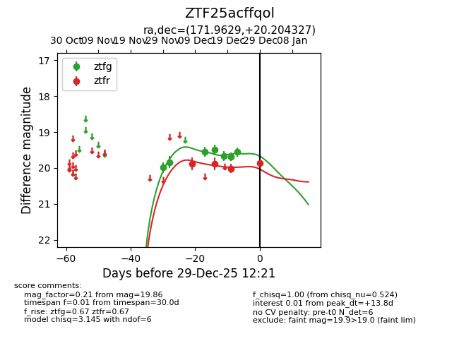
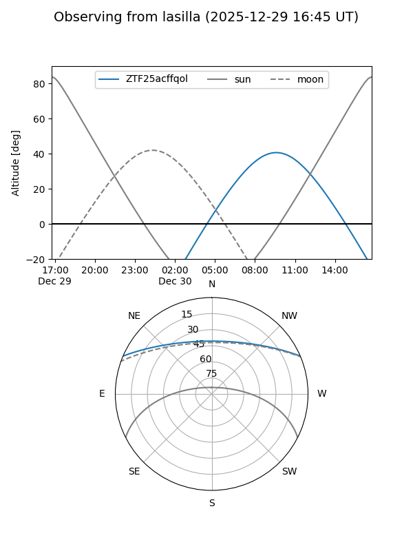
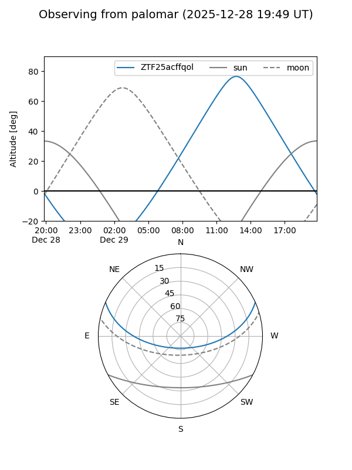
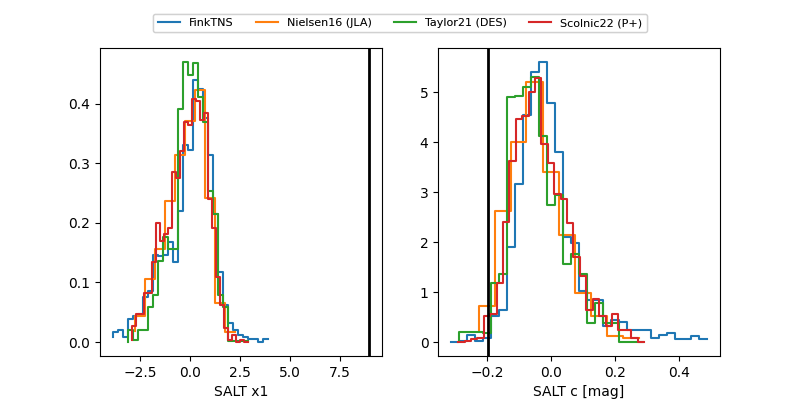

ZTF25acffqol
Target ZTF25acffqol at 2025-12-29 12:23
Aliases and brokers:
FINK: fink-portal.org/ZTF25acffqol
Lasair: lasair-ztf.lsst.ac.uk/objects/ZTF25acffqol
ALeRCE: alerce.online/object/ZTF25acffqol
alt names
ZTF25acffqol (ztf,fink_ztf)
Coordinates:
equatorial (ra, dec) = 171.9629,+20.20433
equatorial (HMS+DMS) = 11:27:51.09,+20:12:15.58
galactic (l, b) = (228.3643,+69.68047)
Flags:
Photometry:
last ztfg=19.56, ztfr=19.86
7 ztfg, 4 ztfr detections
Lightcurve

Visibility


Additional plots
